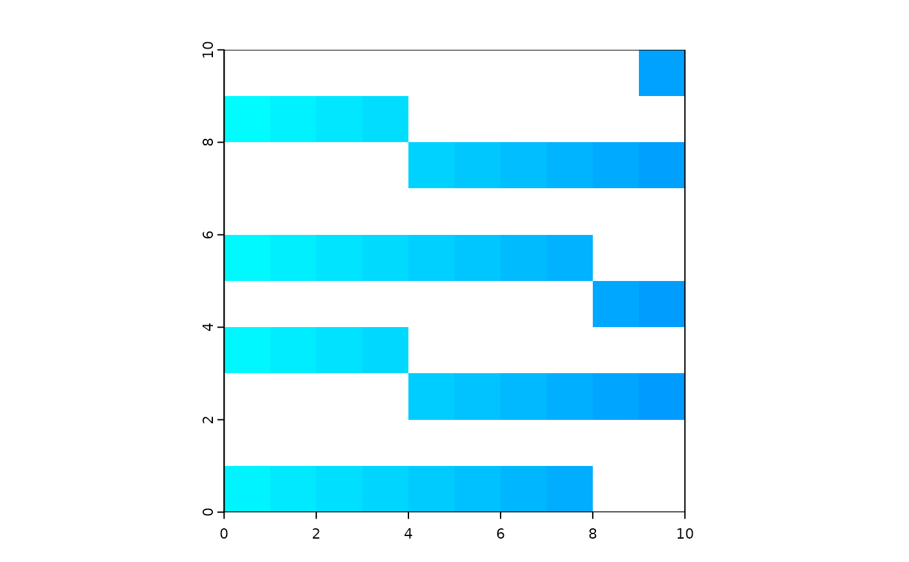
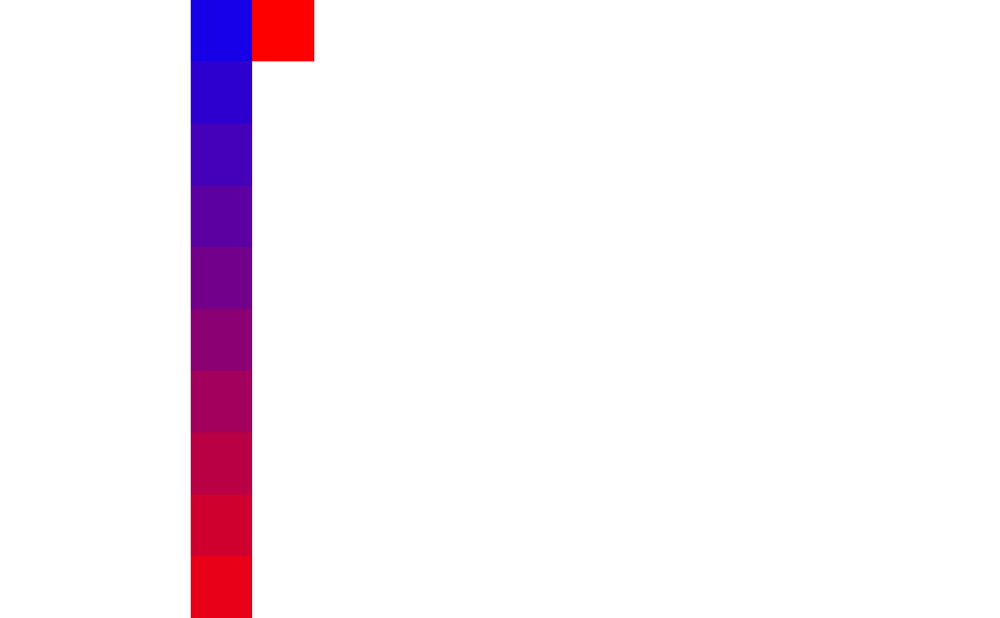
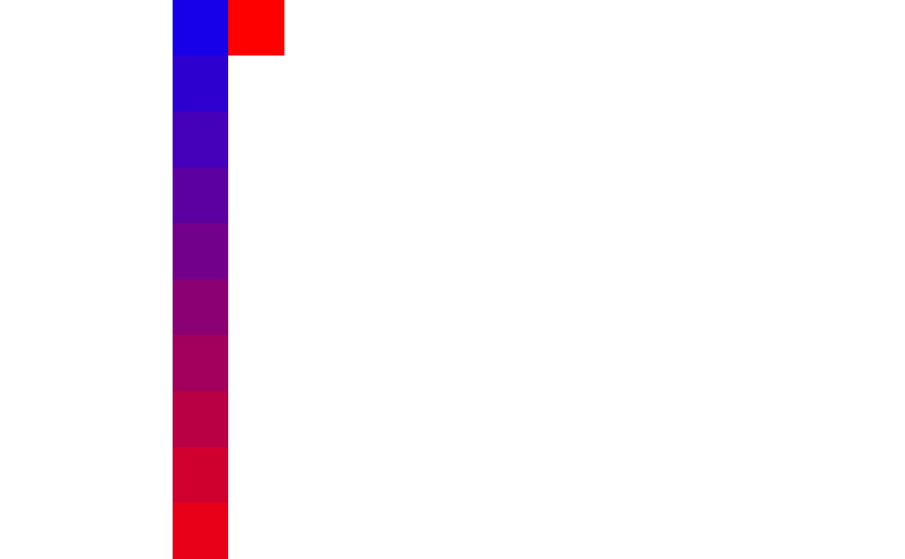

This is a wrapper to help with migration to terra.
Currently can only be used for a single layer SpatRaster or a RasterLayer.
Colors(ras, cols, n = NULL)Arguments
- ras
A
Raster*orSpatRasterclass object.- cols
a character vector of colours. See examples. Can also be a
data.frame, seeterra::coltab- n
A numeric scalar giving the number of colours to create. Passed to
quickPlot::setColors(ras, n = n) <-. If missing, thennwill belength(cols)
Examples
# \donttest{
cols <- colorRampPalette(c("blue", "red"))(12)
ras <- terra::rast(matrix(1:100, 10, 10))
ras <- Colors(ras, cols)
#> not enough colours, interpolating
terra::plot(ras)

ras <- raster::raster(matrix(1:100, 10, 10))
ras <- Colors(ras, cols)
raster::plot(ras)
#> Warning: CRS is NA. Assuming it is longitude/latitude
 
# }

# }